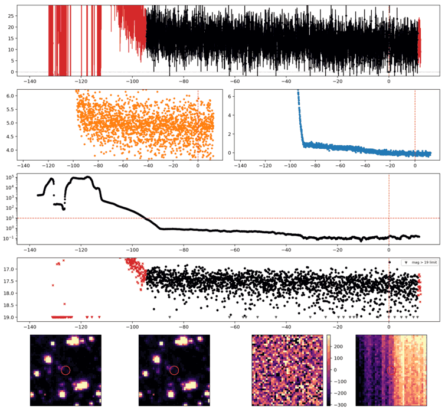
Search centered on refined position (26.3307647, -52.3599993 deg). Gaia coordinates are at J2016.0; proper motions are shown, without epoch propagation. A positional match does not change the candidate flags.
No Gaia DR3 sources found within 5 arcseconds.
Retrieved 2026-10-21T02:00:10.105961+00:00
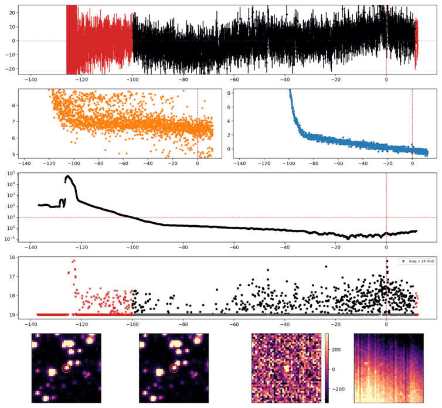
Search centered on refined position (351.5194403, -45.8782907 deg). Gaia coordinates are at J2016.0; proper motions are shown, without epoch propagation. A positional match does not change the candidate flags.
| Source ID / catalog entry | Separation (arcsec) | RA (deg) | Dec (deg) | G (mag) | BP (mag) | RP (mag) | Parallax ± error (mas) | PM RA* ± error (mas/yr) | PM Dec ± error (mas/yr) | RUWE | Variability |
|---|---|---|---|---|---|---|---|---|---|---|---|
| 6528469969185598720 | 3.664 | 351.5207058 | -45.8777813 | 14.293 | 15.847 | 13.079 | 9.444 ± 0.022 | -100.523 ± 0.013 | -107.164 ± 0.016 | 1.220 | NOT_AVAILABLE |
Retrieved 2026-10-21T02:00:10.852062+00:00
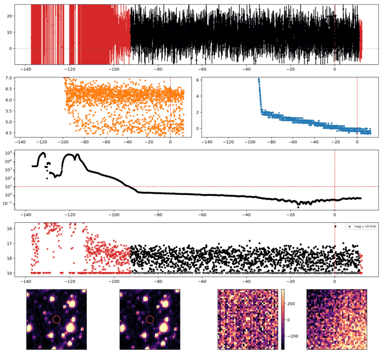
Search centered on refined position (16.3028203, -44.8268312 deg). Gaia coordinates are at J2016.0; proper motions are shown, without epoch propagation. A positional match does not change the candidate flags.
No Gaia DR3 sources found within 5 arcseconds.
Retrieved 2026-10-21T02:00:11.610696+00:00
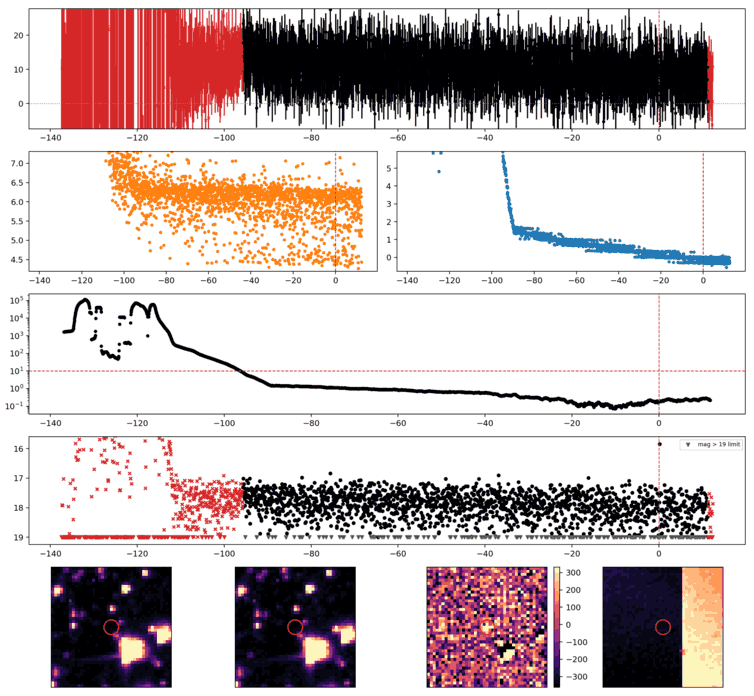
Search centered on refined position (9.2308299, -44.5975552 deg). Gaia coordinates are at J2016.0; proper motions are shown, without epoch propagation. A positional match does not change the candidate flags.
No Gaia DR3 sources found within 5 arcseconds.
Retrieved 2026-10-21T02:00:12.364466+00:00
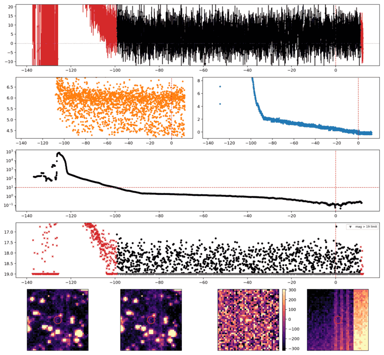
Search centered on refined position (359.6118725, -45.6403555 deg). Gaia coordinates are at J2016.0; proper motions are shown, without epoch propagation. A positional match does not change the candidate flags.
No Gaia DR3 sources found within 5 arcseconds.
Retrieved 2026-10-21T02:00:13.116836+00:00
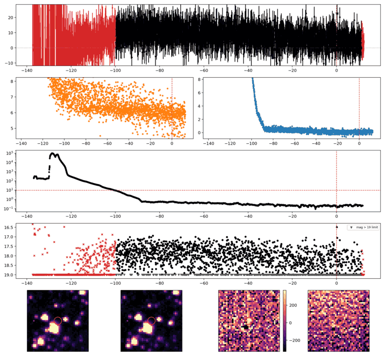
Search centered on refined position (17.1740904, -63.6445780 deg). Gaia coordinates are at J2016.0; proper motions are shown, without epoch propagation. A positional match does not change the candidate flags.
No Gaia DR3 sources found within 5 arcseconds.
Retrieved 2026-10-21T02:00:13.866368+00:00
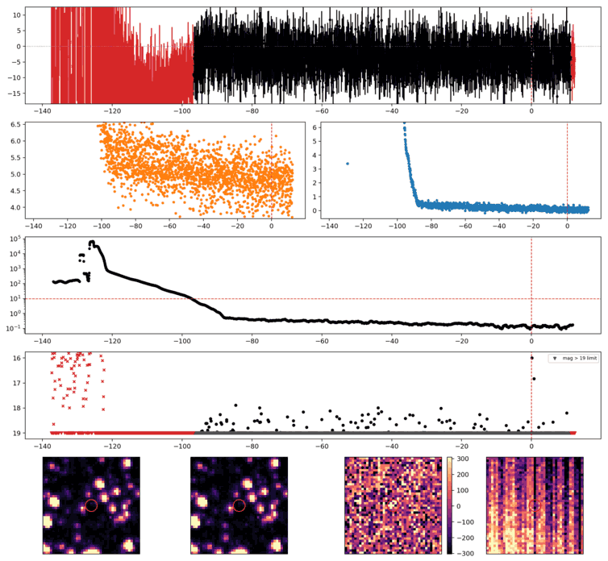
Search centered on refined position (350.3339474, -67.2703431 deg). Gaia coordinates are at J2016.0; proper motions are shown, without epoch propagation. A positional match does not change the candidate flags.
No Gaia DR3 sources found within 5 arcseconds.
Retrieved 2026-10-21T02:00:14.610892+00:00
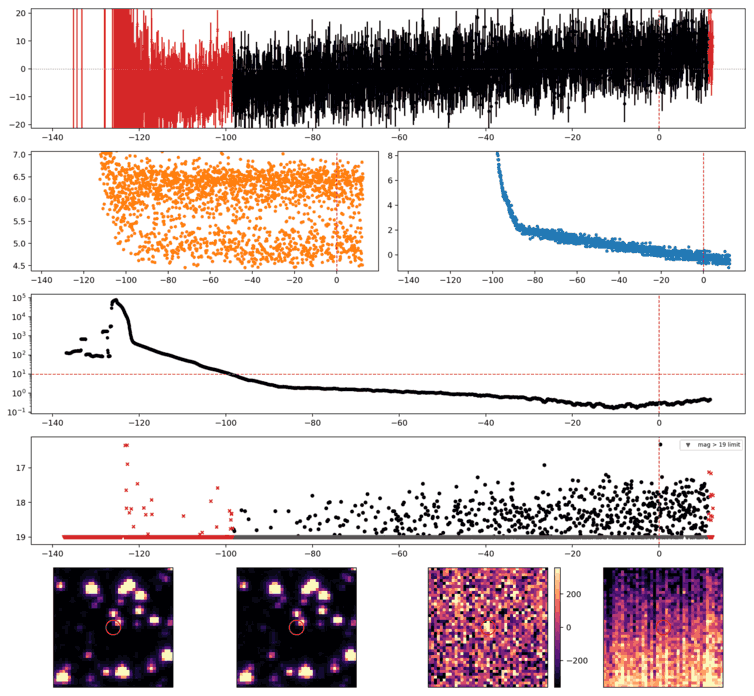
Search centered on refined position (357.3537160, -44.8187760 deg). Gaia coordinates are at J2016.0; proper motions are shown, without epoch propagation. A positional match does not change the candidate flags.
No Gaia DR3 sources found within 5 arcseconds.
Retrieved 2026-10-21T02:00:15.360542+00:00
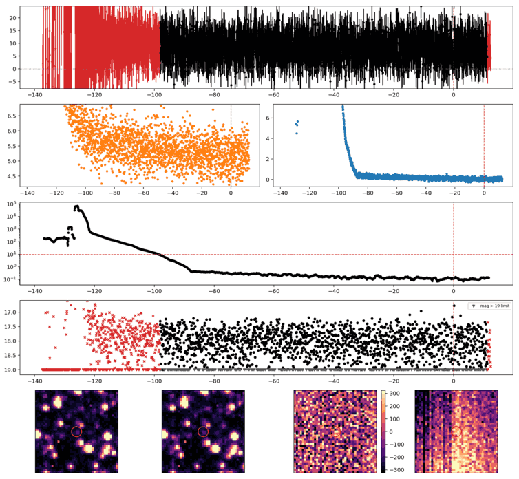
Search centered on refined position (353.6292099, -68.7259817 deg). Gaia coordinates are at J2016.0; proper motions are shown, without epoch propagation. A positional match does not change the candidate flags.
No Gaia DR3 sources found within 5 arcseconds.
Retrieved 2026-10-21T02:00:16.120329+00:00
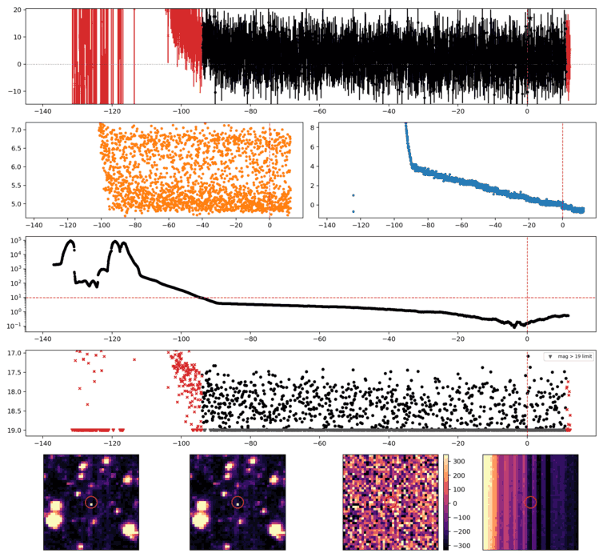
Search centered on refined position (15.9408354, -38.7668641 deg). Gaia coordinates are at J2016.0; proper motions are shown, without epoch propagation. A positional match does not change the candidate flags.
No Gaia DR3 sources found within 5 arcseconds.
Retrieved 2026-10-21T02:00:16.860393+00:00
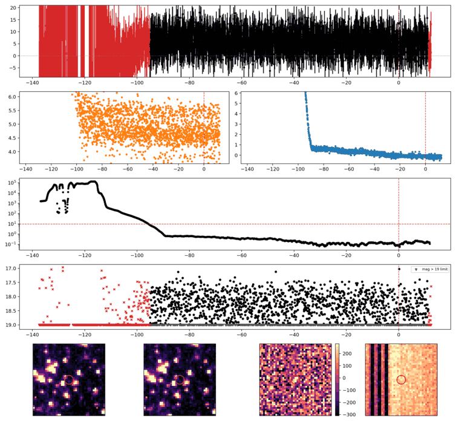
Search centered on refined position (26.1993978, -54.6824761 deg). Gaia coordinates are at J2016.0; proper motions are shown, without epoch propagation. A positional match does not change the candidate flags.
No Gaia DR3 sources found within 5 arcseconds.
Retrieved 2026-10-21T02:00:17.621195+00:00
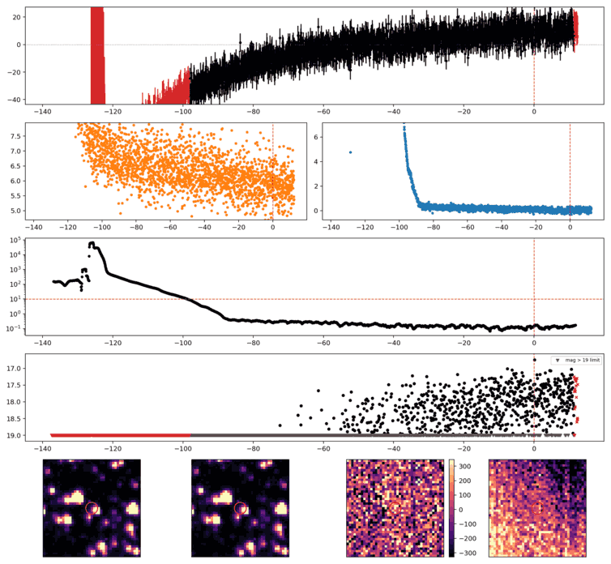
Search centered on refined position (355.1343035, -68.5966599 deg). Gaia coordinates are at J2016.0; proper motions are shown, without epoch propagation. A positional match does not change the candidate flags.
No Gaia DR3 sources found within 5 arcseconds.
Retrieved 2026-10-21T02:00:18.360642+00:00